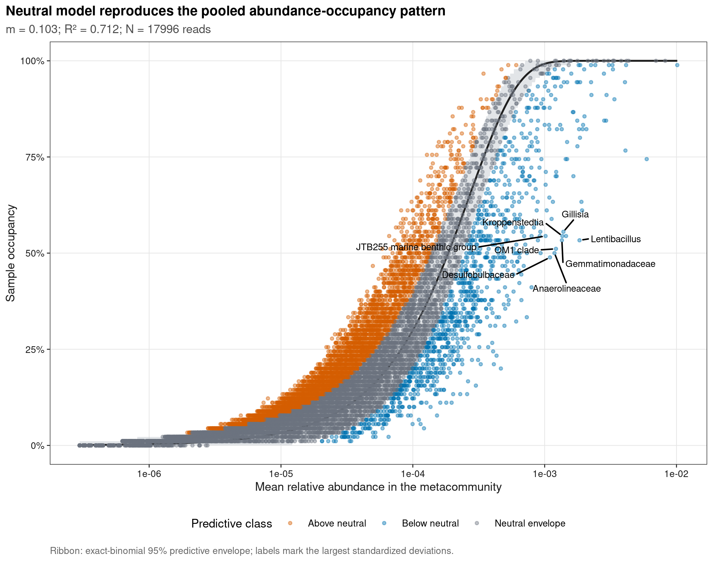
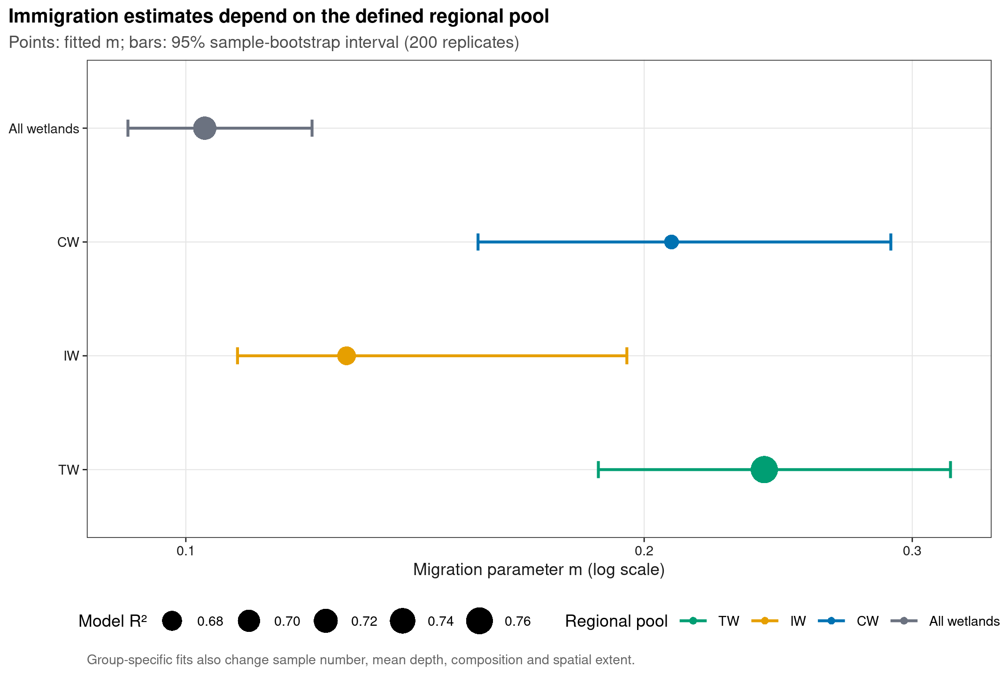
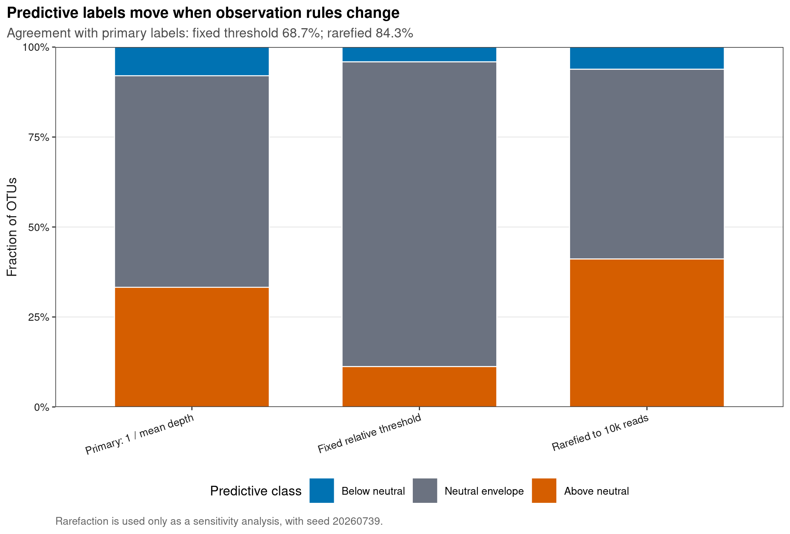
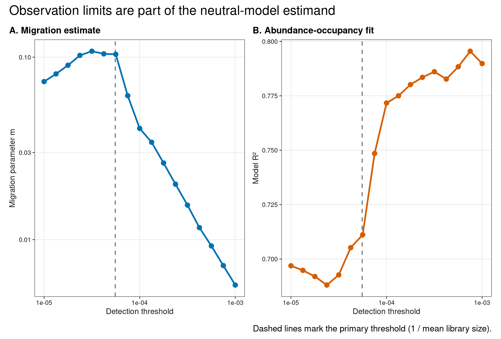

options(timeout = 600)
data_url <- "https://raw.githubusercontent.com/petemeng/microbiome-best-practices/3cb6a817e0c73ab7ecbec1cedc1ad80cbb9ecfaa/"
input_files <- c(
"data/small/metadata.tsv",
"data/small/otutab.tsv",
"data/small/taxonomy.tsv"
)
for (path in input_files) {
dir.create(dirname(path), recursive = TRUE, showWarnings = FALSE)
if (!file.exists(path)) download.file(paste0(data_url, path), path, mode = "wb", quiet = TRUE)
}中性群落模型：Sloan 拟合、迁入率与偏离类群
中性模型的偏离不等于确定性机制
Sloan et al. (2006)给出了微生物 neutral community model；Burns et al. (2016)用 abundance–occupancy 曲线比较斑马鱼不同发育阶段的中性拟合。
重要先给结论
NCM 检验的是一个明确的观测模式：在给定 metacommunity pool、局部群落大小和 detection rule 后，taxon 的平均相对丰度能否解释它出现于多少样本。较高 \(R^2\) 表示该低维 stochastic model 能复现 occupancy pattern；它不等于选择不存在，也不意味着落在 envelope 内的每个 OTU 都是生态学上“中性”的。
本页使用 microeco 2.0.0 随包分发的真实中国湿地 OTU 表：CW、IW、TW 各 30 个样本，共 1,619,670 reads。主模型把全部 90 个样本定义为一个 regional pool；组内模型改变了 pool 和平均 library size，因此只作为分层描述，不把三个 \(m\) 当作无偏处理效应比较。
拟合的 m 为什么不能直接读作实测迁入率？
这里的 N 由文库深度近似，而不是实际群落细胞数；m 的估计因此依赖深度、检出规则和区域类群库。把 CW、IW、TW 分别拟合会同时改变这些条件，所以三个 m 不能仅凭大小排序为“哪个湿地迁入更强”。需要先固定可比的观察尺度，并把参数对合理定义的变化一起报告。
曲线周围的二项包络把给定的预测检出率当作条件，未自动纳入区域丰度和 m 的全部估计误差。更完整的不确定性评估应按独立样本重采样后重新计算丰度与拟合；若存在地点聚类，还要保留该层级。包络外的类群是对模型假设敏感的候选，而不是已经被确定性选择作用的类群清单。
下载并读取本次分析的数据
需要 R，以及 ggplot2、ggrepel、knitr、patchwork、ragg、scales、svglite、vegan。本次使用中国湿地的 OTU count 表、分类表和样本信息表。
在一个新建的文件夹中运行以下代码，下载文件后按文中的顺序继续分析：
library(ggplot2)
library(vegan)
set.seed(20260739)
font_pub <- "sans"
pal_pub <- c(
blue = "#0072B2", orange = "#E69F00", green = "#009E73",
vermillion = "#D55E00", purple = "#CC79A7", sky = "#56B4E9",
yellow = "#F0E442", grey = "#6B7280"
)
scale_color_pub <- function(..., values = unname(pal_pub)) {
ggplot2::scale_color_manual(..., values = values)
}
scale_fill_pub <- function(..., values = unname(pal_pub)) {
ggplot2::scale_fill_manual(..., values = values)
}
theme_pub <- function(base_size = 10, base_family = font_pub) {
ggplot2::theme_bw(base_size = base_size, base_family = base_family) +
ggplot2::theme(
panel.grid.minor = ggplot2::element_blank(),
panel.grid.major = ggplot2::element_line(
colour = "#E6E6E6", linewidth = 0.25
),
axis.text = ggplot2::element_text(colour = "#1A1A1A"),
axis.title = ggplot2::element_text(colour = "#1A1A1A"),
axis.ticks = ggplot2::element_line(colour = "#1A1A1A", linewidth = 0.3),
plot.title.position = "plot",
plot.title = ggplot2::element_text(face = "bold", size = ggplot2::rel(1.15)),
plot.subtitle = ggplot2::element_text(colour = "#4D4D4D"),
plot.caption = ggplot2::element_text(colour = "#666666", hjust = 0),
strip.background = ggplot2::element_rect(
fill = "#F2F2F2", colour = "#B3B3B3", linewidth = 0.3
),
strip.text = ggplot2::element_text(face = "bold"),
legend.key = ggplot2::element_blank(), legend.position = "top"
)
}
save_pub <- function(
plot, file_base, width = 89, height = 70, units = "mm",
dpi = 600, write_svg = TRUE, write_tiff = TRUE,
base_family = font_pub
) {
dir.create(dirname(file_base), recursive = TRUE, showWarnings = FALSE)
ggplot2::ggsave(
paste0(file_base, ".pdf"), plot, width = width, height = height,
units = units, device = grDevices::cairo_pdf,
family = base_family, bg = "white"
)
if (write_svg) ggplot2::ggsave(
paste0(file_base, ".svg"), plot, width = width, height = height,
units = units, device = svglite::svglite, bg = "white"
)
ggplot2::ggsave(
paste0(file_base, ".png"), plot, width = width, height = height,
units = units, dpi = dpi, device = ragg::agg_png, bg = "white"
)
if (write_tiff) ggplot2::ggsave(
paste0(file_base, ".tiff"), plot, width = width, height = height,
units = units, dpi = dpi, device = ragg::agg_tiff,
compression = "lzw", bg = "white"
)
invisible(plot)
}从三件套读取并锁定 sample order
read_keyed_tsv <- function(path) {
x <- readr::read_tsv(
path, show_col_types = FALSE, progress = FALSE,
name_repair = "minimal", na = character()
)
ids <- as.character(x[[1L]])
stopifnot(!anyDuplicated(ids))
out <- as.data.frame(x[-1L], check.names = FALSE)
rownames(out) <- ids
out
}
otutab_raw <- read_keyed_tsv("data/small/otutab.tsv")
taxonomy <- read_keyed_tsv("data/small/taxonomy.tsv")
metadata <- read_keyed_tsv("data/small/metadata.tsv")
otutab <- as.matrix(data.frame(
lapply(otutab_raw, as.integer), check.names = FALSE
))
rownames(otutab) <- rownames(otutab_raw)
metadata$Group <- factor(metadata$Group, levels = c("CW", "IW", "TW"))
otutab <- otutab[, rownames(metadata), drop = FALSE]
clean_taxon <- function(x) {
x <- sub("^[A-Za-z]__", "", trimws(as.character(x)))
x[
is.na(x) | x == "" |
grepl("unclassified|unknown|unassigned|uncultured|metagenome", x,
ignore.case = TRUE)
] <- NA_character_
x
}
rank_names <- c(
"Kingdom", "Phylum", "Class", "Order", "Family", "Genus", "Species"
)
taxonomy_clean <- as.data.frame(
lapply(taxonomy[rownames(otutab), rank_names], clean_taxon),
check.names = FALSE
)
rownames(taxonomy_clean) <- rownames(otutab)
display_taxon <- apply(
taxonomy_clean[, rev(rank_names), drop = FALSE], 1L,
function(x) {
value <- x[!is.na(x)][1L]
if (length(value)) value else "Unclassified OTU"
}
)
names(display_taxon) <- rownames(taxonomy_clean)
stopifnot(
nrow(otutab) == 13628L,
ncol(otutab) == 90L,
sum(otutab) == 1619670L,
identical(colnames(otutab), rownames(metadata)),
all(colSums(otutab) >= 10000L)
)
head(otutab[, 1:5])
head(taxonomy[, rank_names])
head(metadata) S1 S2 S3 S4 S5
OTU_4272 1 0 1 1 0
OTU_236 1 4 0 2 35
OTU_399 9 2 2 4 4
OTU_1556 5 18 7 3 2
OTU_32 83 9 19 8 102
OTU_706 0 1 0 1 0
Kingdom Phylum
OTU_4272 k__Bacteria p__Firmicutes
OTU_236 k__Bacteria p__Chloroflexi
OTU_399 k__Bacteria p__Proteobacteria
OTU_1556 k__Bacteria p__Acidobacteria
OTU_32 k__Archaea p__Miscellaneous Crenarchaeotic Group
OTU_706 k__Bacteria p__Actinobacteria
Class Order Family
OTU_4272 c__Bacilli o__Bacillales f__
OTU_236 c__ o__ f__
OTU_399 c__Betaproteobacteria o__Nitrosomonadales f__Nitrosomonadaceae
OTU_1556 c__Acidobacteria o__Subgroup 17 f__
OTU_32 c__ o__ f__
OTU_706 c__Actinobacteria o__Frankiales f__Nakamurellaceae
Genus Species
OTU_4272 g__ s__
OTU_236 g__ s__
OTU_399 g__ s__
OTU_1556 g__ s__
OTU_32 g__ s__
OTU_706 g__Nakamurella s__
Group Type Saline
S1 IW NE Non-saline soil
S2 IW NE Non-saline soil
S3 IW NE Non-saline soil
S4 IW NE Non-saline soil
S5 IW NE Non-saline soil
S6 IW NE Non-saline soil下载完整 R 脚本。脚本包含数据下载、计算和图形导出。
首次使用时安装 R 包
install.packages(c(
"ggplot2", "ggrepel", "patchwork", "ragg", "readr", "scales",
"svglite", "systemfonts", "vegan"
))曲线、参数和偏离各自回答什么
abundance–occupancy 是模型的观测接口
对 taxon \(i\)，先计算其在 metacommunity 中的平均相对丰度 \(p_i\) 与在局部样本中的 occupancy \(f_i\)。给定平均局部群落大小 \(N\)、migration parameter \(m\) 和 detection threshold \(d\)，本页使用 beta distribution 的连续近似：
\[ \hat f_i = 1 - F_{\mathrm{Beta}}\left(d;\,Nm p_i,\,Nm(1-p_i)\right). \]
主分析把 \(d\) 设为 \(1/N\)，即平均 library 中约 1 read 的相对丰度。\(m\) 通过最小化 observed occupancy 与 predicted occupancy 的平方误差估计；\(Nm\) 常被解释为 immigration 与 local community size 的组合强度。
预测区间用于比较模型与观测，不能定义类群的生态属性
本页用 \(n\) 个样本下的 exact binomial 2.5%–97.5% quantiles 构造 predicted occupancy envelope：
- Above neutral：observed occupancy 高于上界，可能包含广泛选择、持续输入、聚合误差或 detection bias；
- Below neutral：低于下界，可能包含环境过滤、dispersal barrier、竞争、批次或技术 dropout；
- Neutral envelope：当前数据分辨率下没有偏离该模型的证据。
第三类不能改写成“证明中性”。模型有误、区间较宽或统计功效不足时，taxon 同样可能落入 envelope。
\(R^2\) 是 pattern fit，不是过程占比
这里报告
\[ R^2 = 1 - \frac{\sum_i(f_i-\hat f_i)^2} {\sum_i(f_i-\bar f)^2}. \]
它描述 abundance–occupancy curve 的拟合度，不是“中性过程解释了多少群落构建”。同一份数据中的 compositional sampling、heterogeneous selection 与 dispersal limitation 可以共同产生良好拟合。
区域类群库与检出规则会影响模型估计
把三个湿地合并或拆开、用 presence (>0) 或固定 relative-abundance threshold、是否 rarefy，都会改变 occupancy 和 \(N\)。因此模型必须连同 pool、detection、depth handling 和 taxonomic resolution 报告；不能只给一个 \(m\) 与 \(R^2\)。
深入：为什么不用显著性检验替代 envelope
13,628 个 OTU 的 occupancy 不是彼此独立的：每个样本的测序深度有限，OTU 相对丰度具有 closure，多数稀有 OTU 共享 detection constraint。逐 OTU 套普通回归 p-value 会制造一个并不存在的独立检验族。本页保留模型预测区间用于诊断，并把 sample bootstrap 用在总体参数 \(m\) 的不确定性上。
拟合出现频率与平均丰度的关系
拟合 Sloan NCM 并构造 predictive envelope
fit_ncm <- function(counts, detection = NULL) {
stopifnot(all(counts >= 0), all(colSums(counts) > 0))
relative <- sweep(counts, 2L, colSums(counts), "/")
mean_abundance <- rowMeans(relative)
mean_library <- mean(colSums(counts))
if (is.null(detection)) detection <- 1 / mean_library
occupancy <- rowMeans(relative >= detection)
estimable <- mean_abundance > 0 & mean_abundance < 1
objective <- function(log10_m) {
migration <- 10^log10_m
predicted <- stats::pbeta(
detection,
mean_library * migration * mean_abundance[estimable],
mean_library * migration * (1 - mean_abundance[estimable]),
lower.tail = FALSE
)
sum((occupancy[estimable] - predicted)^2)
}
optimum <- stats::optimize(objective, interval = c(-8, 0))
migration <- 10^optimum$minimum
predicted <- rep(NA_real_, length(mean_abundance))
predicted[estimable] <- stats::pbeta(
detection,
mean_library * migration * mean_abundance[estimable],
mean_library * migration * (1 - mean_abundance[estimable]),
lower.tail = FALSE
)
predicted[mean_abundance <= 0] <- 0
predicted[mean_abundance >= 1] <- 1
sample_n <- ncol(counts)
lower <- stats::qbinom(0.025, sample_n, predicted) / sample_n
upper <- stats::qbinom(0.975, sample_n, predicted) / sample_n
classification <- ifelse(
occupancy > upper, "Above neutral",
ifelse(occupancy < lower, "Below neutral", "Neutral envelope")
)
r_squared <- 1 -
sum((occupancy[estimable] - predicted[estimable])^2) /
sum((occupancy[estimable] - mean(occupancy[estimable]))^2)
data.frame(
FeatureID = rownames(counts),
MeanAbundance = mean_abundance,
Occupancy = occupancy,
Predicted = predicted,
Lower = lower,
Upper = upper,
Classification = classification,
Migration = migration,
MeanLibrary = mean_library,
Detection = detection,
RSquared = r_squared,
stringsAsFactors = FALSE
)
}
pooled_fit <- fit_ncm(otutab)
pooled_fit$DisplayTaxon <- display_taxon[pooled_fit$FeatureID]
pooled_fit$StandardizedDeviation <- with(
pooled_fit,
(Occupancy - Predicted) /
pmax(sqrt(Predicted * (1 - Predicted) / ncol(otutab)), 1 / ncol(otutab))
)
primary_summary <- unique(pooled_fit[
, c("Migration", "MeanLibrary", "Detection", "RSquared")
])
classification_summary <- as.data.frame(
table(pooled_fit$Classification), stringsAsFactors = FALSE
)
names(classification_summary) <- c("Classification", "OTUs")
stopifnot(
nrow(primary_summary) == 1L,
primary_summary$Migration > 0,
primary_summary$Migration < 1,
is.finite(primary_summary$RSquared)
)
primary_summary
classification_summary Migration MeanLibrary Detection RSquared
OTU_4272 0.1029033 17996.33 5.556687e-05 0.7115455
Classification OTUs
1 Above neutral 4531
2 Below neutral 1086
3 Neutral envelope 8011对迁入参数 \(m\) 进行样本重采样，并分别拟合三类湿地
bootstrap_migration <- function(counts, replicates, seed) {
set.seed(seed)
replicate(replicates, {
columns <- sample(seq_len(ncol(counts)), replace = TRUE)
unique(fit_ncm(counts[, columns, drop = FALSE])$Migration)
})
}
summarise_pool <- function(counts, pool, seed) {
fit <- fit_ncm(counts)
migration_boot <- bootstrap_migration(
counts, replicates = 200L, seed = seed
)
data.frame(
Pool = pool,
Samples = ncol(counts),
Migration = unique(fit$Migration),
Lower = unname(stats::quantile(migration_boot, 0.025)),
Upper = unname(stats::quantile(migration_boot, 0.975)),
RSquared = unique(fit$RSquared),
Detection = unique(fit$Detection),
stringsAsFactors = FALSE
)
}
pool_ledger <- rbind(
summarise_pool(otutab, "All wetlands", 20260739L),
summarise_pool(
otutab[, metadata$Group == "CW", drop = FALSE], "CW", 20260740L
),
summarise_pool(
otutab[, metadata$Group == "IW", drop = FALSE], "IW", 20260741L
),
summarise_pool(
otutab[, metadata$Group == "TW", drop = FALSE], "TW", 20260742L
)
)
pool_ledger Pool Samples Migration Lower Upper RSquared Detection
1 All wetlands 90 0.1029033 0.0916165 0.1210316 0.7115455 5.556687e-05
2 CW 30 0.2084566 0.1555683 0.2904382 0.6621776 6.124611e-05
3 IW 30 0.1275119 0.1081285 0.1948382 0.6728028 5.031151e-05
4 TW 30 0.2398610 0.1866172 0.3178601 0.7666314 5.622631e-05detection 与测序深度敏感性
fixed_detection_fit <- fit_ncm(otutab, detection = 1e-4)
set.seed(20260739)
rarefied_otutab <- t(vegan::rrarefy(t(otutab), sample = 10000L))
rarefied_fit <- fit_ncm(rarefied_otutab)
classification_sensitivity <- rbind(
transform(
as.data.frame(table(pooled_fit$Classification), stringsAsFactors = FALSE),
Model = "Primary: 1 / mean depth"
),
transform(
as.data.frame(
table(fixed_detection_fit$Classification), stringsAsFactors = FALSE
),
Model = "Fixed relative threshold"
),
transform(
as.data.frame(table(rarefied_fit$Classification), stringsAsFactors = FALSE),
Model = "Rarefied to 10k reads"
)
)
names(classification_sensitivity)[1:2] <- c("Classification", "OTUs")
classification_sensitivity$Fraction <- ave(
classification_sensitivity$OTUs,
classification_sensitivity$Model,
FUN = function(x) x / sum(x)
)
classification_agreement <- data.frame(
Comparison = c(
"Primary vs fixed threshold", "Primary vs rarefied"
),
Agreement = c(
mean(pooled_fit$Classification == fixed_detection_fit$Classification),
mean(pooled_fit$Classification == rarefied_fit$Classification)
),
stringsAsFactors = FALSE
)
detection_grid <- 10^seq(-5, -3, length.out = 17L)
detection_sensitivity <- do.call(rbind, lapply(detection_grid, function(value) {
fit <- fit_ncm(otutab, detection = value)
data.frame(
Detection = value,
Migration = unique(fit$Migration),
RSquared = unique(fit$RSquared),
NeutralFraction = mean(fit$Classification == "Neutral envelope"),
stringsAsFactors = FALSE
)
}))
stopifnot(
all(colSums(rarefied_otutab) == 10000L),
nrow(classification_sensitivity) == 9L,
nrow(detection_sensitivity) == 17L,
all(classification_agreement$Agreement >= 0 &
classification_agreement$Agreement <= 1)
)
classification_agreement Comparison Agreement
1 Primary vs fixed threshold 0.6865277
2 Primary vs rarefied 0.8426768迁入率与偏离类群的解释边界
neutral_model_audit <- data.frame(
Dimension = c(
"Regional pool", "Detection", "Sequencing depth", "Model fit",
"Envelope", "Taxonomic rank", "Group contrast"
),
FragilePractice = c(
"Pool all habitats without justification",
"Define presence differently across analyses",
"Ignore library-size-driven occupancy",
"Translate R-squared into neutral-process percentage",
"Call every in-envelope taxon neutral",
"Compare ASV and genus parameters directly",
"Treat group-specific m as a randomized effect"
),
UpgradedContract = c(
"State source pool and refit plausible strata",
"Prespecify threshold and show sensitivity",
"Report N and a depth-handling sensitivity",
"Use R-squared only as abundance-occupancy fit",
"Use predictive labels as diagnostic evidence",
"Keep one feature universe per comparison",
"Report pool, depth and confounding boundaries"
),
stringsAsFactors = FALSE
)
knitr::kable(
neutral_model_audit,
caption = "Audit contract for neutral community-model claims"
)| Dimension | FragilePractice | UpgradedContract |
|---|---|---|
| Regional pool | Pool all habitats without justification | State source pool and refit plausible strata |
| Detection | Define presence differently across analyses | Prespecify threshold and show sensitivity |
| Sequencing depth | Ignore library-size-driven occupancy | Report N and a depth-handling sensitivity |
| Model fit | Translate R-squared into neutral-process percentage | Use R-squared only as abundance-occupancy fit |
| Envelope | Call every in-envelope taxon neutral | Use predictive labels as diagnostic evidence |
| Taxonomic rank | Compare ASV and genus parameters directly | Keep one feature universe per comparison |
| Group contrast | Treat group-specific m as a randomized effect | Report pool, depth and confounding boundaries |
主模型估计 \(m=\) 0.103，abundance–occupancy \(R^2=\) 0.712；13,628 个 OTU 中有 8011 个落入 95% predictive envelope。把 detection 改为 \(10^{-4}\) 后，分类一致率为 68.7%；把所有样本确定性抽平到 10,000 reads 后，一致率为 84.3%。因此“哪些 OTU 偏离”必须和 detection/depth contract 一起解释。
三个湿地的 group-specific \(m\) 不能直接归因为 habitat effect：拆分后 local sample number、metacommunity composition、mean depth 与 spatial extent 同时改变。可靠比较应在匹配设计中 bootstrap pool definition，并把环境协变量与批次纳入独立分析。
区分模型参数、拟合不足与偏离类群
图 1：丰度与检出率的关系及 95% 预测区间
class_colours <- c(
"Above neutral" = pal_pub[["vermillion"]],
"Neutral envelope" = pal_pub[["grey"]],
"Below neutral" = pal_pub[["blue"]]
)
curve_data <- pooled_fit[order(pooled_fit$MeanAbundance), ]
label_data <- pooled_fit[
order(-abs(pooled_fit$StandardizedDeviation)),
]
label_data <- label_data[!duplicated(label_data$DisplayTaxon), ]
label_data <- head(label_data, 8L)
neutral_curve_plot <- ggplot() +
geom_ribbon(
data = curve_data,
aes(x = MeanAbundance, ymin = Lower, ymax = Upper),
fill = "#BFC5CC", alpha = 0.45
) +
geom_line(
data = curve_data,
aes(x = MeanAbundance, y = Predicted),
colour = "#202020", linewidth = 0.65
) +
geom_point(
data = pooled_fit,
aes(x = MeanAbundance, y = Occupancy, colour = Classification),
size = 0.8, alpha = 0.42
) +
ggrepel::geom_text_repel(
data = label_data,
aes(x = MeanAbundance, y = Occupancy, label = DisplayTaxon),
family = font_pub, size = 2.35, max.overlaps = Inf,
min.segment.length = 0, box.padding = 0.45, point.padding = 0.15,
force = 1.5, max.time = 2, show.legend = FALSE
) +
scale_x_log10(labels = scales::label_scientific()) +
scale_y_continuous(limits = c(0, 1), labels = scales::label_percent()) +
scale_colour_manual(values = class_colours) +
labs(
title = "Neutral model reproduces the pooled abundance-occupancy pattern",
subtitle = sprintf(
"m = %.3f; R² = %.3f; N = %.0f reads",
primary_summary$Migration, primary_summary$RSquared,
primary_summary$MeanLibrary
),
x = "Mean relative abundance in the metacommunity",
y = "Sample occupancy", colour = "Predictive class",
caption = "Ribbon: exact-binomial 95% predictive envelope; labels mark the largest standardized deviations."
) +
theme_pub(base_size = 8.4) +
theme(legend.position = "bottom")
save_pub(
neutral_curve_plot, "figures/39-neutral-abundance-occupancy",
width = 180, height = 143
)
neutral_curve_plot
图 2：pool-specific immigration estimates
pool_ledger$Pool <- factor(
pool_ledger$Pool, levels = rev(c("All wetlands", "CW", "IW", "TW"))
)
pool_plot <- ggplot(
pool_ledger,
aes(x = Migration, y = Pool, colour = Pool)
) +
geom_errorbarh(
aes(xmin = Lower, xmax = Upper), height = 0.15, linewidth = 0.7
) +
geom_point(aes(size = RSquared), shape = 16) +
scale_x_log10() +
scale_colour_manual(values = c(
"All wetlands" = pal_pub[["grey"]], "CW" = pal_pub[["blue"]],
"IW" = pal_pub[["orange"]], "TW" = pal_pub[["green"]]
)) +
scale_size_continuous(range = c(3.2, 6.2)) +
labs(
title = "Immigration estimates depend on the defined regional pool",
subtitle = "Points: fitted m; bars: 95% sample-bootstrap interval (200 replicates)",
x = "Migration parameter m (log scale)", y = NULL,
colour = "Regional pool", size = "Model R²",
caption = "Group-specific fits also change sample number, mean depth, composition and spatial extent."
) +
theme_pub(base_size = 8.6) +
theme(legend.position = "bottom")
save_pub(
pool_plot, "figures/39-neutral-pool-migration",
width = 180, height = 122
)
pool_plot
图 3：OTU classification 的预处理敏感性
classification_sensitivity$Model <- factor(
classification_sensitivity$Model,
levels = c(
"Primary: 1 / mean depth", "Fixed relative threshold",
"Rarefied to 10k reads"
)
)
classification_sensitivity$Classification <- factor(
classification_sensitivity$Classification,
levels = c("Below neutral", "Neutral envelope", "Above neutral")
)
class_sensitivity_plot <- ggplot(
classification_sensitivity,
aes(x = Model, y = Fraction, fill = Classification)
) +
geom_col(width = 0.68, colour = "white", linewidth = 0.3) +
scale_fill_manual(values = class_colours, drop = FALSE) +
scale_y_continuous(labels = scales::label_percent(), expand = c(0, 0)) +
labs(
title = "Predictive labels move when observation rules change",
subtitle = sprintf(
"Agreement with primary labels: fixed threshold %.1f%%; rarefied %.1f%%",
100 * classification_agreement$Agreement[1],
100 * classification_agreement$Agreement[2]
),
x = NULL, y = "Fraction of OTUs", fill = "Predictive class",
caption = "Rarefaction is used only as a sensitivity analysis, with seed 20260739."
) +
theme_pub(base_size = 8.5) +
theme(
axis.text.x = element_text(angle = 18, hjust = 1),
legend.position = "bottom"
)
save_pub(
class_sensitivity_plot, "figures/39-neutral-classification-sensitivity",
width = 180, height = 122
)
class_sensitivity_plot
图 4：检查检出阈值改变后模型是否稳定
m_panel <- ggplot(
detection_sensitivity, aes(x = Detection, y = Migration)
) +
geom_vline(
xintercept = primary_summary$Detection,
linetype = 2, colour = pal_pub[["grey"]]
) +
geom_line(colour = pal_pub[["blue"]], linewidth = 0.8) +
geom_point(colour = pal_pub[["blue"]], size = 1.9) +
scale_x_log10(labels = scales::label_scientific()) +
scale_y_log10() +
labs(
title = "A. Migration estimate", x = "Detection threshold",
y = "Migration parameter m"
) +
theme_pub(base_size = 8.0)
r2_panel <- ggplot(
detection_sensitivity, aes(x = Detection, y = RSquared)
) +
geom_vline(
xintercept = primary_summary$Detection,
linetype = 2, colour = pal_pub[["grey"]]
) +
geom_line(colour = pal_pub[["vermillion"]], linewidth = 0.8) +
geom_point(colour = pal_pub[["vermillion"]], size = 1.9) +
scale_x_log10(labels = scales::label_scientific()) +
labs(
title = "B. Abundance-occupancy fit", x = "Detection threshold",
y = "Model R²"
) +
theme_pub(base_size = 8.0)
detection_plot <- patchwork::wrap_plots(m_panel, r2_panel, nrow = 1L) +
patchwork::plot_annotation(
title = "Observation limits are part of the neutral-model estimand",
caption = "Dashed lines mark the primary threshold (1 / mean library size)."
)
save_pub(
detection_plot, "figures/39-neutral-detection-sensitivity",
width = 180, height = 122
)
detection_plot
result_dir <- "results/39-neutral-community-model"
dir.create(result_dir, recursive = TRUE, showWarnings = FALSE)
utils::write.table(
pooled_fit,
file.path(result_dir, "otu-neutral-ledger.tsv"),
sep = "\t", quote = FALSE, row.names = FALSE
)
utils::write.table(
pool_ledger,
file.path(result_dir, "pool-migration-ledger.tsv"),
sep = "\t", quote = FALSE, row.names = FALSE
)
utils::write.table(
classification_sensitivity,
file.path(result_dir, "classification-sensitivity.tsv"),
sep = "\t", quote = FALSE, row.names = FALSE
)
utils::write.table(
detection_sensitivity,
file.path(result_dir, "detection-sensitivity.tsv"),
sep = "\t", quote = FALSE, row.names = FALSE
)
expected_bases <- c(
"figures/39-neutral-abundance-occupancy",
"figures/39-neutral-pool-migration",
"figures/39-neutral-classification-sensitivity",
"figures/39-neutral-detection-sensitivity"
)
expected_files <- as.vector(outer(
expected_bases, c(".pdf", ".svg", ".png", ".tiff"), paste0
))
stopifnot(
all(file.exists(expected_files)),
nrow(pooled_fit) == 13628L,
nrow(pool_ledger) == 4L,
all(pool_ledger$Migration > 0 & pool_ledger$Migration < 1),
unique(pooled_fit$RSquared) > 0.50,
all(colSums(rarefied_otutab) == 10000L),
setequal(
unique(pooled_fit$Classification),
c("Above neutral", "Below neutral", "Neutral envelope")
)
)
注意常见坑：审稿人会追问的九件事
- 不定义 metacommunity pool：合并不同 habitat 会把 selection gradient 混进 pooled occupancy。
- 把 \(m\) 解释为真实迁移率：它是模型尺度上的 migration parameter，并与 \(N\)、pool 和 detection 相连。
- 把 \(R^2\) 写成中性过程比例：它只是 abundance–occupancy pattern fit。
- 把 envelope 内 OTU 宣布为中性：正确表述是“未检测到偏离”。
- 忽略 library size：低深度样本更难检出稀有 OTU。
- 先过滤偏离模型的稀有类群：feature filtering 会改变待解释的 rare biosphere。
- 只报一条漂亮曲线：至少给 detection/depth sensitivity 与 parameter uncertainty。
- 跨 rank 比较 \(m\)：aggregation 会同时改变 abundance 与 occupancy。
- 用 observational group difference 写因果：pool composition、空间范围与环境共线性必须单独处理。
报告中性群落模型的方法与限制
The OTU table, taxonomy and metadata were read independently and aligned by sample identifier. The metacommunity comprised 13,628 OTUs in 90 wetland samples (1,619,670 reads; 30 samples each from CW, IW and TW). For each OTU, mean metacommunity relative abundance and occupancy above a prespecified detection limit of one read per mean library (\(d=1/N\)) were calculated. The Sloan neutral community model was fitted by minimizing squared error between observed occupancy and the beta-distribution prediction over \(10^{-8}\le m\le1\). Exact-binomial 95% predictive limits classified OTUs as above, below or within the neutral envelope. Parameter uncertainty was estimated using 200 sample-bootstrap replicates for the pooled dataset and each wetland-specific pool. Sensitivity analyses used a fixed relative-abundance threshold of \(10^{-4}\), deterministic rarefaction to 10,000 reads per sample, and 17 detection limits from \(10^{-5}\) to \(10^{-3}\). Random seeds were fixed at 20260739–20260742. \(R^2\) was interpreted as abundance–occupancy fit rather than a fraction of neutral assembly.
将中性群落模型用于自己的研究
otutab <- read_keyed_tsv("your_data/otutab.tsv")
taxonomy <- read_keyed_tsv("your_data/taxonomy.tsv")
metadata <- read_keyed_tsv("your_data/metadata.tsv")
# 必改：在拟合前写清 regional pool 与 detection rule。
pool_samples <- rownames(metadata)[metadata$YourPoolColumn == "TargetPool"]
counts <- as.matrix(otutab[, pool_samples, drop = FALSE])
fit <- fit_ncm(counts, detection = 1 / mean(colSums(counts)))若研究问题是“recipient community 从哪个 source 输入”，source pool 应来自设计和生物学，而不是为了提高 \(R^2\) 后验挑选。若是 repeated measures、不同 body sites 或多个地理区域，分别拟合只是第一步；pool-level inference 还需要 subject/site-aware resampling 与明确的比较 estimand。
参考
- Sloan WT, Lunn M, Woodcock S, et al. Quantifying the roles of immigration and chance in shaping prokaryote community structure. Environmental Microbiology. 2006;8:732–740. https://doi.org/10.1111/j.1462-2920.2005.00956.x
- Burns AR, Stephens WZ, Stagaman K, et al. Contribution of neutral processes to the assembly of gut microbial communities in the zebrafish over host development. ISME Journal. 2016;10:655–664. https://doi.org/10.1038/ismej.2015.142
- Sloan WT, Woodcock S, Lunn M, et al. Modeling taxa-abundance distributions in microbial communities using environmental sequence data. Microbial Ecology. 2007;53:443–455. https://doi.org/10.1007/s00248-006-9141-x
- Gloor GB, Macklaim JM, Pawlowsky-Glahn V, Egozcue JJ. Microbiome datasets are compositional: and this is not optional. Frontiers in Microbiology. 2017;8:2224. https://doi.org/10.3389/fmicb.2017.02224
- An J, Liu C, Wang Q, et al. Soil bacterial community structure in Chinese wetlands. Geoderma. 2019;337:290–299. https://doi.org/10.1016/j.geoderma.2018.09.035
- Liu C, Cui Y, Li X, Yao M. microeco: an R package for data mining in microbial community ecology. FEMS Microbiology Ecology. 2021;97:fiaa255. https://doi.org/10.1093/femsec/fiaa255